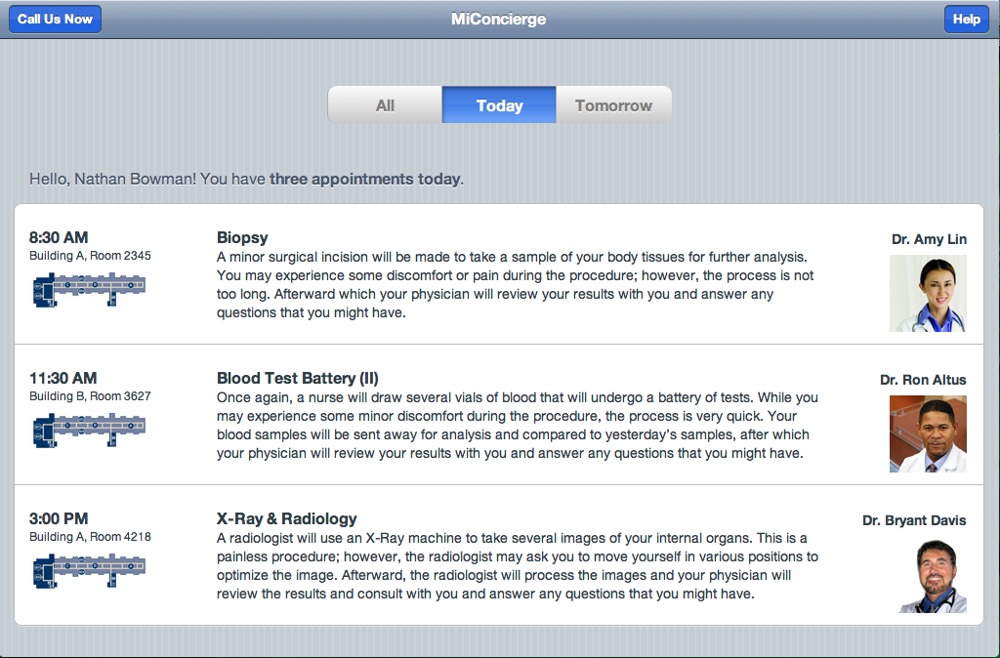
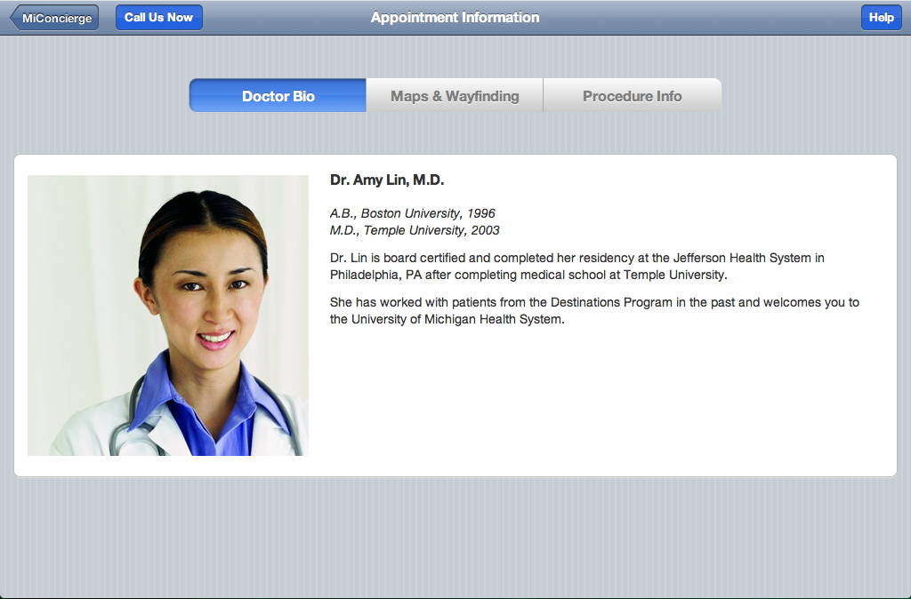
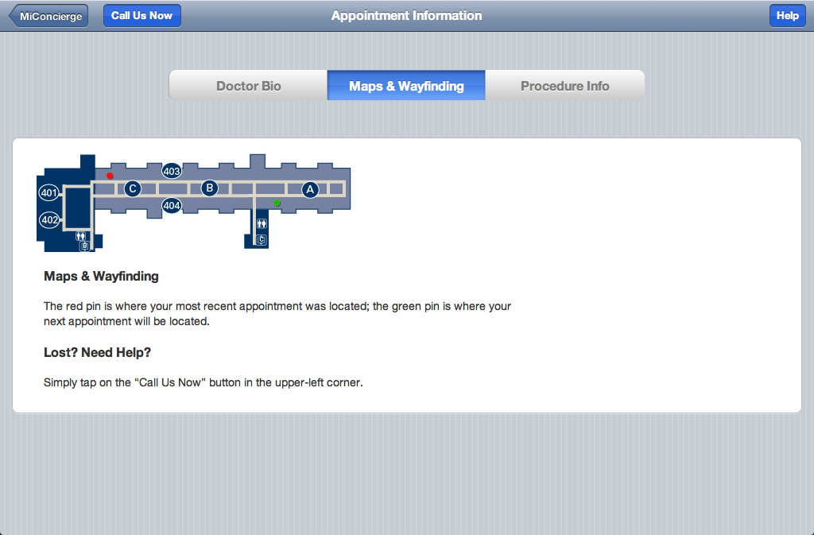
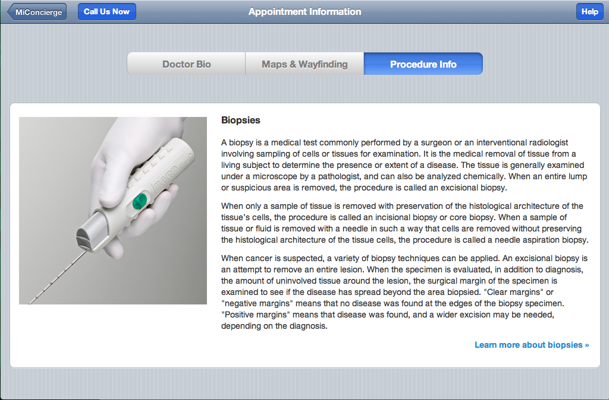
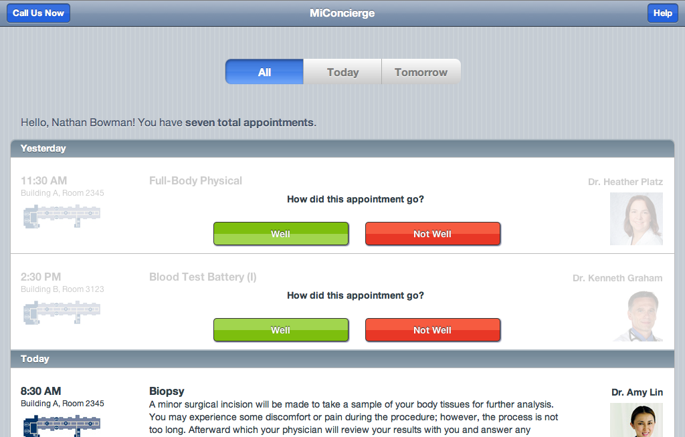
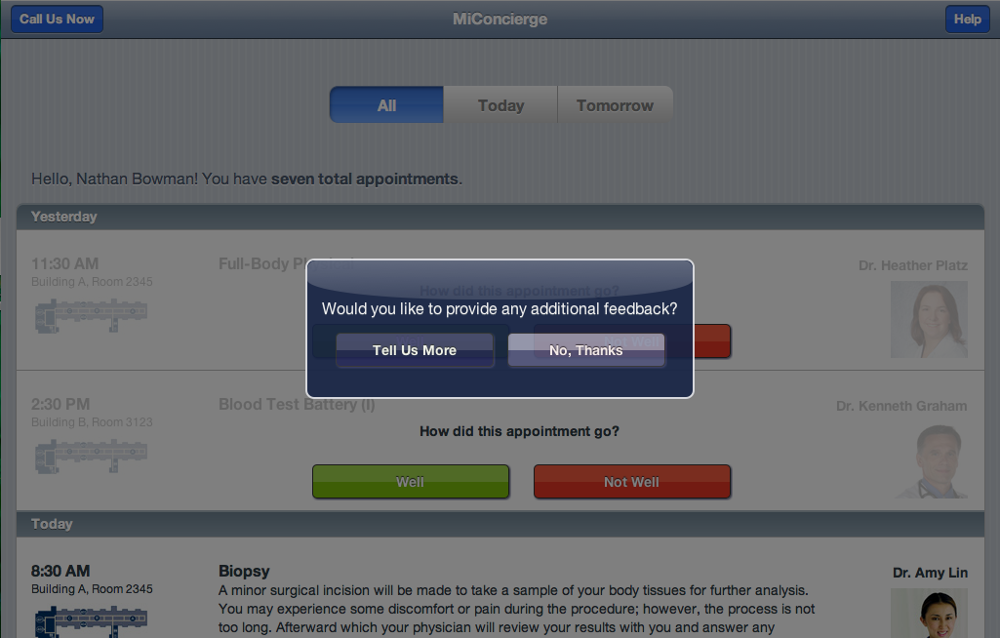
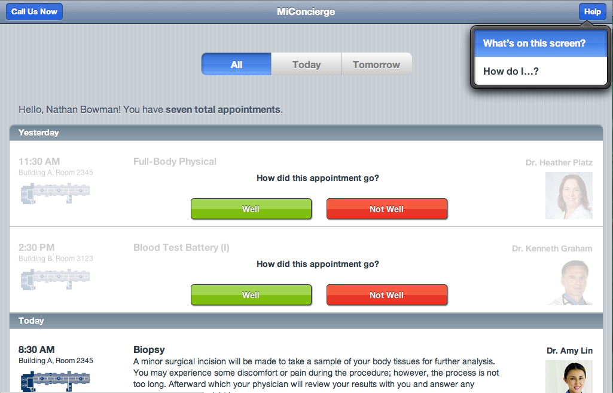
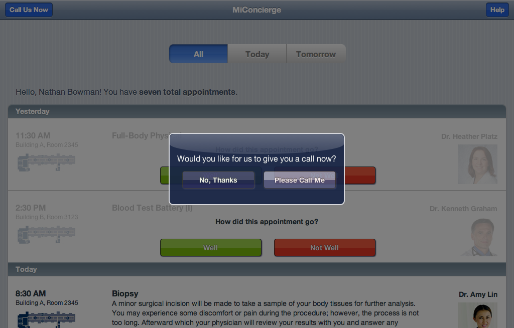

-

Home Screen. We interviewed medical staff and identified the most important information to visiting patients. This amounted to a simplified agenda for patients that explained procedures, introduced doctors, and gave basic wayfinding information.
-

Doctor Bio. Patients want to get to know their doctors, both for recognition and assurance. The app makes the doctor's background clear to patients before they meet.
-

Appointment Map. The top complaint among visiting patients is that the hospital campus is difficult to navigate. Relative maps from one appointment to the next are provided, in addition to accessing a hotline that enables patients to get directions.
-

Procedure Info. Patients typically visit for complex, specialized procedures which are difficult to understand. The app offers simple explanations for procedures, drawing from an existing database provided by the hospital.
-

Feedback Prompt (Step 1). The hospital's main goal is to improve the patient experience. Gathering patient feedback after an appointment is vital to improving, as well as being able to act upon feedback as quickly as possible. Since many patients are exhausted from filling out medical forms, we designed a simple two-step feedback prompt.
-

Feedback Prompt (Step 2). After indicating positive/negative feedback, the user is offered the option to record voice feedback. This was chosen over text-based feedback because some patients may have disabilities, and many others do not use mobile keyboards.
-

Contextual Help. A contextual help button is available at all times. The dialog lists all the tasks that are possible on the current screen. We chose contextual help to minimize tree navigation for patients, many of whom are not used to mobile apps.
-

Call Hotline. At any time, patients can request to be called by a hotline specific to their needs. This includes appointment navigation, getting help with the app, or asking questions directly to a human. The hotline operator receives patient information as a call is made to immediately add context to the conversation.